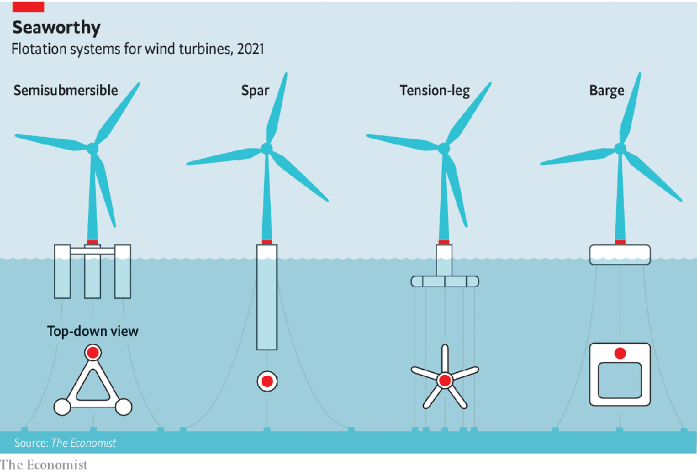

2021-08-09T14:40:14+00:00
可再生能源
漂浮式风力涡轮机可能高高升起在水上
但它们升得越高，维修起来就越难

七月十六日，石油天然气公司荷兰皇家壳牌和西班牙电力公司伊维尔德罗拉（Iberdrola）的子公司苏格兰电力（Scottish Power）发布公告称，它们正联合向英国政府提交一项提案，要在苏格兰沿海建造全球首个大规模漂浮式风电场。目前最大的漂浮式风电场是位于北海、距离阿伯丁（Aberdeen）15公里的六台涡轮机组，容量为50兆瓦，预计将于本月完工。而壳牌-苏格兰电力的联合体则表示，自己考虑建造的是吉瓦级机组。
如今，建造在海床上的海上风电场已经成为一些地方能源构成的一部分。过去四年里它们的容量几乎翻了一番，从19吉瓦增加到35吉瓦；摊余成本降低了三分之一，从120美元/兆瓦时下降到80美元/兆瓦时。但它们的部署有限制，目前只能建造在水深60来米以内的海域。
遗憾的是，世界上80%的离岸风吹过的海域水深都超过60米。隶属于经合组织（OECD）的国际能源署（IEA）表示，这些离岸风如果得以利用，产生的电力将足足是2040年全球可能的电力需求的11倍。关键是造出虽然锚定在海床上却也能漂浮的涡轮机。如果壳牌和苏格兰电力能够解决这一关键问题，将是向开发这一潜能迈出的一大步。
随风而动
十年前，漂浮式涡轮机还是项边缘技术。其难点不在于涡轮机本身，而在于让它们漂浮。自上世纪60年代以来，石油和天然气行业已经开发了一系列浮式基座结构，能够让钻井等庞然大物在海上保持稳定。但把这项技术转移到风力发电上可没那么容易。首先，与石油钻井不同，风力涡轮机不仅细长，还头重脚轻，这让它很容易翻倒。其次，涡轮机产生的强大回转力会进一步破坏浮式装置的稳定性。在那会儿，很难想象能有足够低成本的解决方案来和固定在海床上的涡轮机竞争，更不用说和传统能源竞争了。
如今不一样了。十年的研发产生了两项成果：一是证明了涡轮机可以漂浮，二是弄清了这些漂浮装置的可能样式。工程师们不厌其烦地反复研究样机，终于取得了这些进展。他们先在大学的造浪池里测试设计模型，再按比例放大成小型演示装置，在挪威、葡萄牙和日本的沿海试验。
每个装置上都挂满了传感器，收集颠簸度、风速和浪高等变量的数据。这些数据而后被用于设计出更大、更稳定的装置。如今，我们可以从挪威和葡萄牙沿海的新机型中看到这些研究成果，它能让功率四倍于上一代产品的涡轮机安全地漂浮在海面上。工程师们由此认为漂浮的问题已经解决。“涡轮机运转良好。它们不会翻倒。这是可以做到的。”这一领域的先驱阿拉·温斯坦（Alla Weinstein）表示。他目前正申请在加州沿岸建造漂浮式风电场的许可证。
目前已有四种漂浮方法（见示意图）。最常见的是半潜式。美国公司Principle Power采用的就是这种方法。半潜式有多种设计方案。Principle的方案使用一个有浮力的钢制三角结构，三角的两个顶点安装有装满水的压载水舱。这些水舱通过调整水在三角结构中的分布来保持稳定，从而平衡第三个顶点上的涡轮机的重量。
另一种方法是将涡轮机固定在名为“立柱”的瓶型容器上，容器里装满了能让它直立漂浮的沉重压舱物。挪威的Equinor和其他一些公司采用的就是这种方法。Equinor将涡轮机放置在80米高的混凝土管上，管内装有水、石块或其他廉价的重物。
还有两种方法虽然不那么成熟，但也可能管用。美国工程公司Glosten已与通用电气合作，使用张力腿式平台。这是一个海星状的钢结构，涡轮机放置在它的中心。固定在海床上的锚索让“海星”得以浸没在海水中。这种设计类似于在墨西哥湾采油的超深水钻井平台马格诺利亚号（Magnolia），可以让涡轮机保持直立。挪威公司BW Ideol则将涡轮机安装在一个扁平的、像空画框一样的混凝土或钢制驳船上。当涡轮机摇摆时，水就在框内晃荡，起到减缓它运动的作用。该公司声称，它的样机已经在日本沿海经受住了三次台风的考验。
说干就干
这些技术进展足以让项目开发商信心满满。壳牌-苏格兰电力联合体没有提及自己青睐哪种技术方案，尽管它们的提议是迄今为止最为雄心勃勃的，但并不是第一个。阿伯丁附近50兆瓦的机组属于西班牙建筑公司Grupo Cobra，使用的是Principle的设计方案。此外，Equinor已经开始建设一个有11台涡轮机、容量88兆瓦的项目，为一批北海钻井平台提供电力。法国石油天然气公司道达尔和麦格理银行（Macquarie）的项目开发子公司绿色投资集团（Green Investment Group）打算在2023年前在韩国沿海动工建造一个500兆瓦的漂浮式风力项目——尽管它们也还没具体说明计划使用哪种技术。
显而易见，发电场越大需要的涡轮机就越多。但在理想情况下，它们也需要更大的涡轮机。而涡轮机越大，维修保养就越困难。风力涡轮机需要不时更换叶片或发电机等大型部件。这在陆地上就已是个挑战。但在陆地上，起重机至少还可以稳稳立在地面上。在海上，“自升式”船舶通过把钢质桩腿下沉到海床上来获得类似的稳定性。但漂浮式涡轮机工作的海域往往水太深，自升式船舶无法运作，因此所有维修涡轮机的船舶都只能保持漂浮不定的状态。“这两个结构体都在移动，而你要把负载从其中一个移动的结构体转移到另一个上。”Equinor的项目总监奥拉夫-伯恩特·哈加（Olav-Bernt Haga）说。这在技术上要求很高，因此很难做到低成本。
一个名为漂浮式风电产业联合项目（Floating Wind Joint Industry Project，以下简称FWJIP）的组织认为这是当务之急，该组织的职责是指出攸关整个行业利益的问题。其成员包括17个项目开发商以及英国非营利咨询机构碳信托（Carbon Trust）。FWJIP去年发布的一份分析报告指出，风力涡轮机已经接近在海上安装维护的物理极限。石油行业有许多在深水中作业的重型起重船。但这些起重船优先考虑的是吊装重量，而不是高度，且租金昂贵。漂浮式风电行业需要新对策，否则它就可能发现自己“长不高”了——不管是物理高度还是发展高度。
幸运的是，一些有望成功的解决方案正在研发中。这些方案大体采用两种办法来解决上述问题：起吊和爬升。起吊的例子是荷兰公司OWL Heavy Lift，该公司已经开始着手研发用于海上风电设备维护的船舶OWL-010。任何研发漂浮式风力涡轮机的公司都必须处理波浪的问题。轻微的海面浪涌都可能在高处造成危险的摆动。OWL-010将使用运动补偿软件来消除这种晃动的影响，该软件能把起重机的吊钩位置稳定在5厘米以内，即使吊钩位于海平面以上150米处。
然而，这类船舶的起步价就在2.5亿美元左右。仅这一项费用就意味着该行业将不得不共享少量船舶，这会制约行业发展。这就是为什么有人建议不要再试图用吊臂去够那些涡轮机，而是从涡轮机的机体上爬上去。
揽九天风云
爬升式起重机能快速攀爬上正在施工的建筑物，常被用来在陆地上建造摩天大楼。虽然它们还没有在海上经过检验，但有几家企业正在开发可能适用于漂浮式风电项目的爬升式起重机。例如，位于英国剑桥市的SENSEWind公司建议在涡轮机塔柱的侧面安装轨道，这样就可以让船舶停靠在塔柱边，把维修车放到轨道上，从而沿塔柱上下运送大型零部件。
其他人则建议直接利用涡轮机来起吊。大多数涡轮机都自带一个能起吊轻量物品的小型起重机。丹麦公司Liftra利用这种小型起重机循序渐进地把越来越大的起重机吊上去。最大的起重机可以装进标准的40英尺（12.2米）的集装箱里。该公司声称，只要用螺栓固定住，这样安装起来的起重机就能和传统的外部起重机一样强大。或者还可以像荷兰承包商Conbit提议的那样，将一些金属部件和电缆拉到塔柱顶端，就可以在涡轮机的顶部临时搭建一个重型起重机。
所有这些技术都还处于样机阶段。但它们可能对未来的巨型涡轮机很有价值，无论是固定式还是漂浮式的。不过，对漂浮式涡轮机来说可能还有一种选择。不同于固定式涡轮机，它们可以解开锚索，被拖到岸上。FWJIP近期资助的一项分析认为，在具体个案中，到底用哪种方案最好可能要取决于地点。如果漂浮式涡轮机离岸不远，将其拖回港口维修可能是最简单的办法。如果离岸很远，像OWL-010这样的新奇玩意或是爬升式起重机可能会效果更好。
这一切的结果是，风电发电量可能很快会大幅上升，却不需要在山坡上到处安装涡轮机，同时还能从中盈利。这足以让所有人鼓起信心的风帆。
2021-08-09T14:40:14+00:00
Renewable energy
Floating wind turbines could rise to great heights
But the taller they get, the harder they will be to repair
ON JULY 16TH Royal Dutch Shell, an oil and gas company, and Scottish Power, a subsidiary of Iberdrola, a Spanish electricity utility, made an announcement. They were, they said, jointly submitting proposals to the British authorities to build, off the coast of Scotland, the first large-scale set of floating wind farms in the world. At the moment, the largest floating farm is a six-turbine, 50MW array which is due for completion this month in the North Sea, 15km from Aberdeen. The consortium, by contrast, has said it is thinking in gigawatts (GW).
Offshore wind farms with foundations in the seabed are now part of the energy mix in several places. In the past four years their capacity has nearly doubled, from 19GW to 35GW, and amortised costs have dropped by a third, from $120 per MW-hour to $80. They are, however, of limited deployability, being restricted to waters shallower than about 60 metres.
Unfortunately, 80% of the world’s offshore wind blows over places deeper than that. Making these accessible, says the International Energy Agency, an offshoot of the OECD, would unlock enough power to meet the world’s probable electrical needs in 2040 11 times over. The trick is to build turbines which, though moored to the seabed, will float. If Shell and Scottish Power can pull this trick off, it will be a big step towards tapping that potential.
Blowing in the wind
A decade ago, floating-turbine technology was a fringe affair. The difficulty was not the turbines themselves, but making them float. The oil and gas industry had, since the 1960s, developed a range of floating foundations that could keep titanic objects like drilling rigs stable at sea. But transferring that know-how to wind power was hardly straightforward. First, unlike an oil rig, a wind turbine is lanky and top-heavy, making it prone to tip over. Second, turbines generate powerful gyroscopic forces that would further destabilise a floating machine. It was hard, in those days, to see how these problems could be solved cheaply enough to compete with turbines bolted to the ocean floor—much less with conventional power sources.
No longer. A decade of development has yielded two things: proof that turbines can float and clarity as to how these floating units might look. Engineers achieved this through patient prototyping. They took designs previously tested in university wave pools and scaled them up into small demonstration units off the coasts of Norway, Portugal and Japan.
Each unit, bedecked with sensors, gathered data on variables such as pitch, wind speed and wave height. These data were then folded into designs, for bigger, more stable units. The results, visible today in newer models off the Norwegian and Portuguese coasts, can safely float turbines four times as powerful as their predecessors. Engineers therefore consider the flotation problem solved. “The turbines function nicely. They don’t flip. It can be done,” said Alla Weinstein, a pioneer of the field who is now pursuing permits for a floating wind farm off the coast of California.
Four approaches to flotation have emerged (see diagram). The commonest is a semisubmersible. Principle Power, an American company, is one firm pursuing this. Semisubmersibles come in various designs. Principle’s uses a buoyant steel triangle that has water-filled cans at two of the vertices. These ballast tanks balance the weight of a turbine at the third vertex, with water pumped around inside the triangle to trim its stability.
A second tack, pursued by, among others, Equinor, a Norwegian firm, is to stick a turbine on a bottle called a spar that is filled with heavy ballast, to make it float upright. Equinor does this by placing the turbine on top of an 80-metre-high concrete tube containing water, rocks or some other cheap and heavy material.
Two other approaches are less developed, but may prove useful. Glosten, an American engineering firm that has formed a partnership with General Electric, uses a tension-leg platform. This is a starfish-shaped steel structure with a turbine at its hub. The starfish is submerged and yoked to the ocean floor with cables. This arrangement, similar to that for the ultra-deep-water Magnolia rig, drilling in the Gulf of Mexico, holds the turbine upright. And BW Ideol, a Norwegian firm, erects the turbine on a flat concrete or steel barge that resembles an empty picture frame. When the turbine sways, water sloshes within the frame, dampening its movement. The company claims its prototype, off the coast of Japan, has already survived three typhoons.
Just do it
Project developers have seen enough to convince them. Though the Shell-Scottish Power consortium’s proposals (which make no mention of a preferred technological approach) are the most ambitious so far, they are not the first. Besides the 50MW array off Aberdeen, which is owned by Grupo Cobra, a Spanish construction company that uses Principle’s design, Equinor has begun construction on an 11-unit, 88MW project which will power a group of North Sea drilling platforms. Total, a French oil and gas company, and Green Investment Group, a project-development arm of Macquarie, a bank, intend to start work on a 500MW floating wind project off the coast of South Korea by 2023—though they, too, have not yet specified which technology they plan to use.
Bigger farms obviously require more turbines. But they also, ideally, require bigger turbines. And the bigger a turbine is, the harder it is to maintain. Wind turbines occasionally need big parts, like blades or generators, replaced. That is challenging on terra firma. But on land, a crane can brace itself against the earth. At sea, “jackup” vessels achieve similar stability by dropping steel legs to the seabed. Floating turbines will, however, operate in waters too deep for jackup vessels to work, so any vessel servicing one will have, itself, to remain floating. “You have two structures that are moving, and you’re going to shift the load from one of these moving structures to another one,” said Olav-Bernt Haga, a project director at Equinor. This will be technically demanding and thus hard to do cheaply.
A group called the Floating Wind Joint Industry Project (FWJIP), the job of which is to flag up matters of collective interest, deems this an urgent problem. This group is made up of 17 project developers and the Carbon Trust, a not-for-profit consultancy based in Britain. In an analysis published last year the FWJIP said that wind turbines are nearing the physical limits of what can be handled at sea. The oil industry has a number of heavy-lift ships that work in deep water. But these are optimised for weight, not height, and are expensive to hire. The floating-wind industry needs new answers, or it could find itself stunted, both literally and metaphorically.
Fortunately, prospects are in development. They take two broad approaches to the problem: lifting and climbing. An example of the former is OWL Heavy Lift, a Dutch company, which has started work on the OWL-010, a vessel dedicated to offshore-wind maintenance. Anyone working on floating wind turbines must contend with waves. A gentle swell at the surface can cause a treacherous sweep up high. The OWL-010 will iron out the effect of this swaying by using motion-compensation software that steadies the position of the crane’s hook to within 5cm. This works even when that hook is 150 metres above sea level.
The price tags for such vessels, though, start at around $250m. The cost alone implies that the industry would have to share a small number of ships, presenting a bottleneck to growth. That is why some propose to stop reaching up to turbines, and to start climbing them, instead.
Reach for the sky
Climbing cranes, which scurry up the very object they are building, are often used to raise skyscrapers on land. They are unproven at sea, but several groups are developing versions that might suit floating wind power. SENSEWind, a firm in Cambridge, England, for example, suggests putting tracks on the sides of turbine towers. This would let a ship pull up alongside, place a maintenance car on the tracks, and thus move large parts up and down the tower.
Others propose to lift from the turbine itself. Most turbines have a small crane for light items. Liftra, a Danish company, uses this to raise progressively larger cranes. The biggest fits in a standard 40-foot (12.2 metre) shipping container. Once bolted on, the company claims, the arrangement is as powerful as a conventional external crane. Alternatively, as Conbit, a Dutch contractor, proposes, pulling a few metal parts and cables to the top of the tower would allow a heavy-duty crane to be fashioned temporarily on the turbine’s crown.
None of these technologies is beyond the prototype stage. But they may prove valuable for the mega-turbines of tomorrow, be they fixed or floating. For floating turbines, however, an alternative may exist. Unlike fixed turbines, they can be unplugged and dragged to shore. Recent analysis sponsored by the FWJIP suggests that what is best in individual circumstances may depend on location. If a floating turbine is near the shore, it may be easiest to tow it back to port for repair. If far away, exotic gadgets like the OWL-010 or climbing cranes may work better.
The upshot of all this is that it may soon be possible to extract a lot more electrical power from the wind, to do so without covering hillsides with turbines, and to make a profit while doing it. And that is enough to put wind in anyone’s sails. ■
2021-08-09T14:40:14+00:00
可再生能源
漂浮式風力渦輪機可能高高升起在水上
但它們升得越高，維修起來就越難
七月十六日，石油天然氣公司荷蘭皇家殼牌和西班牙電力公司伊維爾德羅拉（Iberdrola）的子公司蘇格蘭電力（Scottish Power）發布公告稱，它們正聯合向英國政府提交一項提案，要在蘇格蘭沿海建造全球首個大規模漂浮式風電場。目前最大的漂浮式風電場是位於北海、距離阿伯丁（Aberdeen）15公里的六台渦輪機組，容量為50兆瓦，預計將於本月完工。而殼牌-蘇格蘭電力的聯合體則表示，自己考慮建造的是吉瓦級機組。
如今，建造在海床上的海上風電場已經成為一些地方能源構成的一部分。過去四年里它們的容量幾乎翻了一番，從19吉瓦增加到35吉瓦；攤余成本降低了三分之一，從120美元/兆瓦時下降到80美元/兆瓦時。但它們的部署有限制，目前只能建造在水深60來米以內的海域。
遺憾的是，世界上80%的離岸風吹過的海域水深都超過60米。隸屬於經合組織（OECD）的國際能源署（IEA）表示，這些離岸風如果得以利用，產生的電力將足足是2040年全球可能的電力需求的11倍。關鍵是造出雖然錨定在海床上卻也能漂浮的渦輪機。如果殼牌和蘇格蘭電力能夠解決這一關鍵問題，將是向開發這一潛能邁出的一大步。
隨風而動
十年前，漂浮式渦輪機還是項邊緣技術。其難點不在於渦輪機本身，而在於讓它們漂浮。自上世紀60年代以來，石油和天然氣行業已經開發了一系列浮式基座結構，能夠讓鑽井等龐然大物在海上保持穩定。但把這項技術轉移到風力發電上可沒那麼容易。首先，與石油鑽井不同，風力渦輪機不僅細長，還頭重腳輕，這讓它很容易翻倒。其次，渦輪機產生的強大迴轉力會進一步破壞浮式裝置的穩定性。在那會兒，很難想象能有足夠低成本的解決方案來和固定在海床上的渦輪機競爭，更不用說和傳統能源競爭了。
如今不一樣了。十年的研發產生了兩項成果：一是證明了渦輪機可以漂浮，二是弄清了這些漂浮裝置的可能樣式。工程師們不厭其煩地反覆研究樣機，終於取得了這些進展。他們先在大學的造浪池裡測試設計模型，再按比例放大成小型演示裝置，在挪威、葡萄牙和日本的沿海試驗。
每個裝置上都掛滿了傳感器，收集顛簸度、風速和浪高等變量的數據。這些數據而後被用於設計出更大、更穩定的裝置。如今，我們可以從挪威和葡萄牙沿海的新機型中看到這些研究成果，它能讓功率四倍於上一代產品的渦輪機安全地漂浮在海面上。工程師們由此認為漂浮的問題已經解決。“渦輪機運轉良好。它們不會翻倒。這是可以做到的。”這一領域的先驅阿拉·溫斯坦（Alla Weinstein）表示。他目前正申請在加州沿岸建造漂浮式風電場的許可證。
目前已有四種漂浮方法（見示意圖）。最常見的是半潛式。美國公司Principle Power採用的就是這種方法。半潛式有多種設計方案。Principle的方案使用一個有浮力的鋼製三角結構，三角的兩個頂點安裝有裝滿水的壓載水艙。這些水艙通過調整水在三角結構中的分布來保持穩定，從而平衡第三個頂點上的渦輪機的重量。
另一種方法是將渦輪機固定在名為“立柱”的瓶型容器上，容器里裝滿了能讓它直立漂浮的沉重壓艙物。挪威的Equinor和其他一些公司採用的就是這種方法。Equinor將渦輪機放置在80米高的混凝土管上，管內裝有水、石塊或其他廉價的重物。
還有兩種方法雖然不那麼成熟，但也可能管用。美國工程公司Glosten已與通用電氣合作，使用張力腿式平台。這是一個海星狀的鋼結構，渦輪機放置在它的中心。固定在海床上的錨索讓“海星”得以浸沒在海水中。這種設計類似於在墨西哥灣採油的超深水鑽井平台馬格諾利亞號（Magnolia），可以讓渦輪機保持直立。挪威公司BW Ideol則將渦輪機安裝在一個扁平的、像空畫框一樣的混凝土或鋼製駁船上。當渦輪機搖擺時，水就在框內晃蕩，起到減緩它運動的作用。該公司聲稱，它的樣機已經在日本沿海經受住了三次颱風的考驗。
說干就干
這些技術進展足以讓項目開發商信心滿滿。殼牌-蘇格蘭電力聯合體沒有提及自己青睞哪種技術方案，儘管它們的提議是迄今為止最為雄心勃勃的，但並不是第一個。阿伯丁附近50兆瓦的機組屬於西班牙建築公司Grupo Cobra，使用的是Principle的設計方案。此外，Equinor已經開始建設一個有11台渦輪機、容量88兆瓦的項目，為一批北海鑽井平台提供電力。法國石油天然氣公司道達爾和麥格理銀行（Macquarie）的項目開發子公司綠色投資集團（Green Investment Group）打算在2023年前在韓國沿海動工建造一個500兆瓦的漂浮式風力項目——儘管它們也還沒具體說明計劃使用哪種技術。
顯而易見，發電場越大需要的渦輪機就越多。但在理想情況下，它們也需要更大的渦輪機。而渦輪機越大，維修保養就越困難。風力渦輪機需要不時更換葉片或發電機等大型部件。這在陸地上就已是個挑戰。但在陸地上，起重機至少還可以穩穩立在地面上。在海上，“自升式”船舶通過把鋼質樁腿下沉到海床上來獲得類似的穩定性。但漂浮式渦輪機工作的海域往往水太深，自升式船舶無法運作，因此所有維修渦輪機的船舶都只能保持漂浮不定的狀態。“這兩個結構體都在移動，而你要把負載從其中一個移動的結構體轉移到另一個上。”Equinor的項目總監奧拉夫-伯恩特·哈加（Olav-Bernt Haga）說。這在技術上要求很高，因此很難做到低成本。
一個名為漂浮式風電產業聯合項目（Floating Wind Joint Industry Project，以下簡稱FWJIP）的組織認為這是當務之急，該組織的職責是指出攸關整個行業利益的問題。其成員包括17個項目開發商以及英國非營利諮詢機構碳信託（Carbon Trust）。FWJIP去年發布的一份分析報告指出，風力渦輪機已經接近在海上安裝維護的物理極限。石油行業有許多在深水中作業的重型起重船。但這些起重船優先考慮的是吊裝重量，而不是高度，且租金昂貴。漂浮式風電行業需要新對策，否則它就可能發現自己“長不高”了——不管是物理高度還是發展高度。
幸運的是，一些有望成功的解決方案正在研發中。這些方案大體採用兩種辦法來解決上述問題：起吊和爬升。起吊的例子是荷蘭公司OWL Heavy Lift，該公司已經開始着手研發用於海上風電設備維護的船舶OWL-010。任何研髮漂浮式風力渦輪機的公司都必須處理波浪的問題。輕微的海面浪涌都可能在高處造成危險的擺動。OWL-010將使用運動補償軟件來消除這種晃動的影響，該軟件能把起重機的吊鉤位置穩定在5厘米以內，即使吊鉤位於海平面以上150米處。
然而，這類船舶的起步價就在2.5億美元左右。僅這一項費用就意味着該行業將不得不共享少量船舶，這會制約行業發展。這就是為什麼有人建議不要再試圖用吊臂去夠那些渦輪機，而是從渦輪機的機體上爬上去。
攬九天風雲
爬升式起重機能快速攀爬上正在施工的建築物，常被用來在陸地上建造摩天大樓。雖然它們還沒有在海上經過檢驗，但有幾家企業正在開發可能適用於漂浮式風電項目的爬升式起重機。例如，位於英國劍橋市的SENSEWind公司建議在渦輪機塔柱的側面安裝軌道，這樣就可以讓船舶停靠在塔柱邊，把維修車放到軌道上，從而沿塔柱上下運送大型零部件。
其他人則建議直接利用渦輪機來起吊。大多數渦輪機都自帶一個能起吊輕量物品的小型起重機。丹麥公司Liftra利用這種小型起重機循序漸進地把越來越大的起重機吊上去。最大的起重機可以裝進標準的40英尺（12.2米）的集裝箱裡。該公司聲稱，只要用螺栓固定住，這樣安裝起來的起重機就能和傳統的外部起重機一樣強大。或者還可以像荷蘭承包商Conbit提議的那樣，將一些金屬部件和電纜拉到塔柱頂端，就可以在渦輪機的頂部臨時搭建一個重型起重機。
所有這些技術都還處於樣機階段。但它們可能對未來的巨型渦輪機很有價值，無論是固定式還是漂浮式的。不過，對漂浮式渦輪機來說可能還有一種選擇。不同於固定式渦輪機，它們可以解開錨索，被拖到岸上。FWJIP近期資助的一項分析認為，在具體個案中，到底用哪種方案最好可能要取決於地點。如果漂浮式渦輪機離岸不遠，將其拖回港口維修可能是最簡單的辦法。如果離岸很遠，像OWL-010這樣的新奇玩意或是爬升式起重機可能會效果更好。
這一切的結果是，風電發電量可能很快會大幅上升，卻不需要在山坡上到處安裝渦輪機，同時還能從中盈利。這足以讓所有人鼓起信心的風帆。